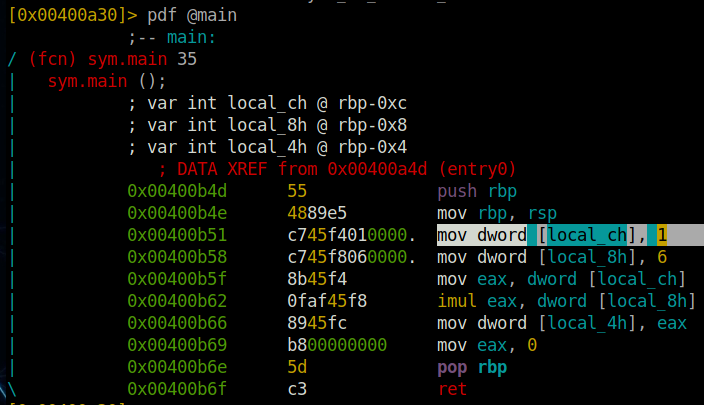

task22

What is the value of local_ch when its corresponding movl instruction is called (first if multiple)?
Asnwer: The mov instruction copies the value ‘1’ to the address of the local_ch variable.
What is the value of eax when the imull instruction is called?
Asnwer: In the line afterwards the literal ‘6’ is copied into the local_8h variable.
Afterwards, the value of local_ch is copied into the eax register.
The values of eax (1) and and local_8h (6) are multiplied -> 1*6 = 6
What is the value of local_4h before eax is set to 0?
Answer: The result of the multiplication is then copied into local_4h -> 6